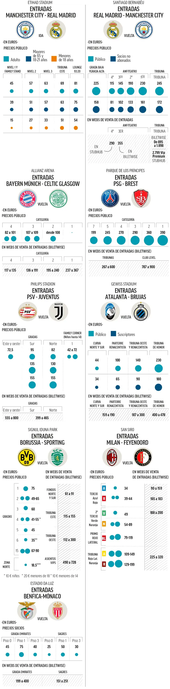

Vuelven las eliminatorias de toda la vida en la Champions. El formato cambió en la primera fase pero a partir de ahora regresa a lo que todos conocemos. Vuelve el mayor espectáculo del fútbol europeo, la mejor experiencia para el aficionado al deporte en directo. Vuelve la emoción de un partido a vida o muerte. Y también vuelven los precios disparados, por lo menos en España. El Real Madrid-Manchester City es la eliminatoria más atractiva con diferencia, pero también la segunda más cara de los ocho play-offs que se van a disputar entre hoy y mañana, después del PSG-Brest.
Por cierto, en París, donde la eliminatoria quedó sentenciada la semana pasada con el 0-3 que logró el equipo de Luis Enrique en la ida en Brest, el club sacó ayer algunas de las pocas entradas a la venta que le quedan de las 11.000 que ofrece al público no abonado en el Parque de los Príncipes con unos precios mucho más razonables: 48€, 69€ y 111€. Pero todos los aficionados que compraron sus entradas antes de ese 0-3 tuvieron que pagar el dineral habitual: entre 190€ y 390€. Con razón el PSG es el segundo equipo de toda Europa que más ingresa en los días de partido.
